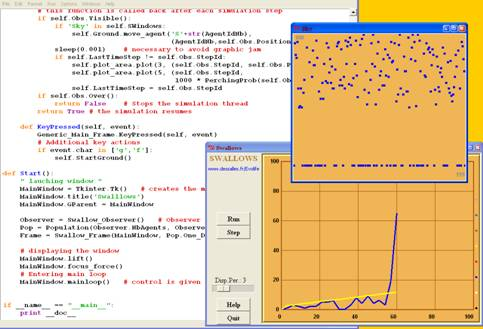

Evolife
Jean-Louis Dessalles
Telecom ParisTech
www.dessalles.fr
2. How to execute Evolife (+ download)
7. Create your
own Evolife scenario
8. Use Evolife’s components
separately (graphics, ecology, genetic algorithm)
Some
examples illustrating how to use some of Evolife’s components are available in the directory Other. They include:
|
· Ants : |
moving
ants foraging for food |
animated graphics |
|
· CellularAutomaton : |
a basic
implementation of 1-D |
just
drawing |
|
· Cocktail : |
the
cocktail party effect |
animated graphics |
|
· Segregationism : |
|
animated graphics |
|
· SegregationismGA : |
|
same + GA |
|
· Swallows : |
Collective
decision |
animated graphics |
|
· EcologyExample.py : |
Just a
living population |
ecology,
no GA |
|
· GAExample.py : |
Evolife void
scenario, waiting for being customized |
GA |
|
· GraphicExample.py : |
To show
how to use Evolife’s graphics. |
animated graphics |
To see how
to use Evolife’s graphic,
look at GraphicExample.py in Other.
To see how
to introduce a genetic algorithm in a non-GA application, look at the
difference between Segregationism.py and SegregationismGA.py. The main difference is in the name of
inherited classes. Note that reproduction significantly slows down execution.
The six
first examples in the above list can be executed in their respective
directories by executing starter.
This is a
snapshot of the Swallows.py program.
|
 |
|
-
In all these example, you can see that the interface with Evolife’s graphics is achieved using the
function Start:
Evolife.QtGraphics.Start(OneStep, MyObserver, Capabilities)
§
OneStep is a function of yours that will be called
repeatedly at each time step. OneStep should
call MyObserver.season() to increment time step.
§
MyObserver will provide data from your simulation (see
below).
§
Capabilities should be a string of letters taken
from:
o
C = Curves
o
F = Field (2D seasonal display) (excludes R)
o
G = Genome display
o
L = Log Terminal (not implemented)
o
N = Social network display (connectome)
o
P = Photo (allows to take screenshots)
o
R = Region (2D ongoing display) (excludes F)
-
Your programme should define a class MyObserver that inherits either
Evolife.Ecology.Observer.Generic_Observer
or
Evolife.Ecology.Observer.Observer
The latter allows you to perform statistics.
The MyObserver class may redefine the following
functions :
1.
get_data(Slot). This function is called from Evolife_window.py. The main slots are:
1. 'Positions'. This slot is used to display
agents on a 2-D field or region. In this case, get_data should return a list (or a tuple)
containing tuples:
((Name1, Coord1), (Name2, Coord2). . .) or simply
(Coord1, Coord2. . .)
The first format is required for animation: by resending new coordinates for NameX, the corresponding object moves.
Coord is a tuple
with up to 8 values (missing values are replaced by defaults):
Coord =
(x, y, colour, size, ToX, ToY,
ToColour, ToThickness)
The first four values define a ‘blob’, and the four last define an optional
line drawn from the blob (see GraphicExample.py). Colours are numbers between 1 and something like 45). When colour < 0, the agent will be removed from display. When using Field, get_data('Positions') should return all coordinates of
all agents (missing agents will be removed from display). When using Region, you need only to provide coordinates for agents that have changed
location. Give a negative colour to remove an agent from display.
2. 'Network'. This slot is used to display social
links. get_data should return a list (or a tuple)
containing tuples (Name, [(Friend1,Strength),…]), where Name defines an agent, Friend1 its best friend and Strength the intensity of the link (may be 0 if irrelevant).
3. 'DNA'. This slot is used to display the genomes of a
whole group (one line per individual). get_data('DNA') should return a list (or tuple) containing tuples like (0,0,1,0,1…) that indicate the genome of one
individual.
4. 'Image'. This slot is used to display images.
2.
get_info(Slot). The possible slots (see Evolife_window.py) are:
1. 'ScenarioName'. Should return a string.
2. 'CurveNames'. Should return a tuple or list of couples (CurveId, CurveName) where CurveId is a number between 1 and something
like 15 and CurveName is a string that provides semantics
to the curve.
3. 'GenePattern'. Should return a mask (0,0,0,0,0,1,1,1,1…) that provides gene boundaries. pattern and all elements returned by get_data(‘DNA’) should have the same length..
4. 'Best'. Should return the phenotype of the
best individual. Typically a path (successive positions).
5. 'Icon'. Should returns
the path to an icon for the windows of your application.
6. 'EvolifeMainDir'. Should return the path to your
application.
7. 'OutputDir'. Should return the path to the location
where results are to be stored.
8. 'ResultFile'. Should return the path to the file
where curves are dumped.
9. 'ResultHeader'. First lines that should appear in
curve dump.
10. 'ResultOffset'. Should return an integer
indicating the number of lines to be ignored when computing statistics.
3.
GetPlotOrders. This function should return a list containing
couples:
[(Curve_id,
(x,y)),...] where Curve_id is a number indicating the colour (between 1
and something like 45), and (x,y)
are the coordinates of the next point to plot on the curve. x is typically equal to MyObserver.StepId, which represent the current year. StepId can be incremented by calling MyObserver.season().
-
The preceding functions need only be implemented when the corresponding
capabilities are indicated when calling Start.
2. How to execute Evolife (+ download)
7. Create your
own Evolife scenario
8. Use Evolife’s
components separately (graphics, ecology, genetic algorithm)
Evolife
Jean-Louis Dessalles
Telecom ParisTech
www.dessalles.fr